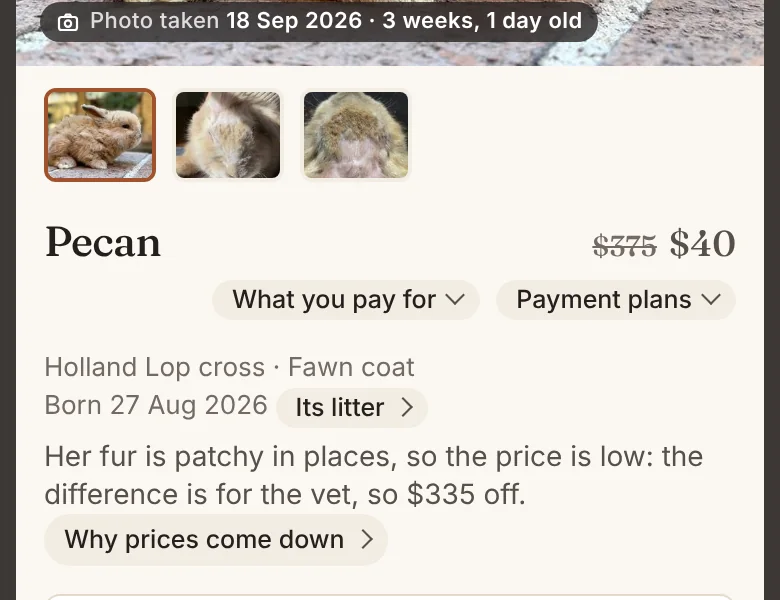
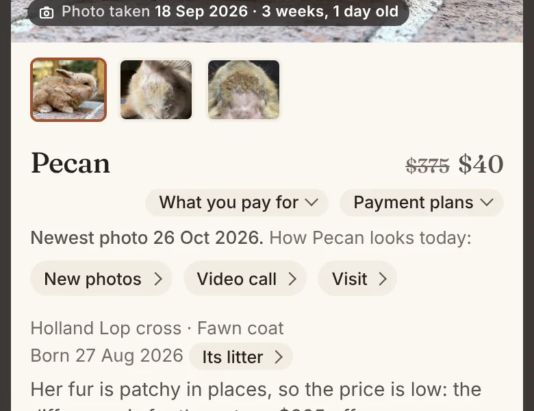

Ask for new photos, a video call or a visit, under every rabbit's photos.
The site's photos are not always this week's, so every rabbit for sale now says the day of its newest photo and offers three taps: New photos, Video call and Visit. Each writes you a text or an email to send; I answer it myself, so nothing is booked until I call you back.

